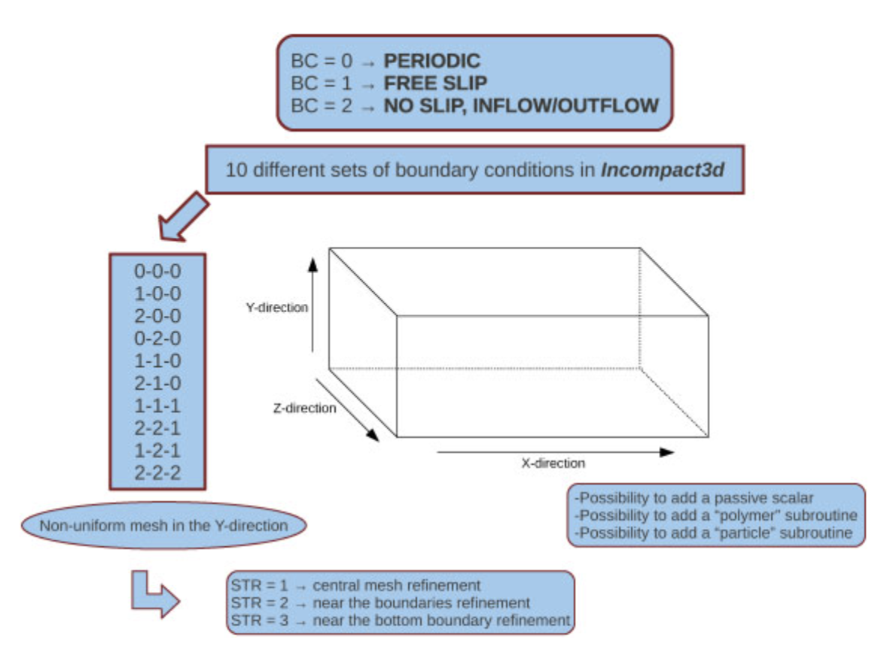
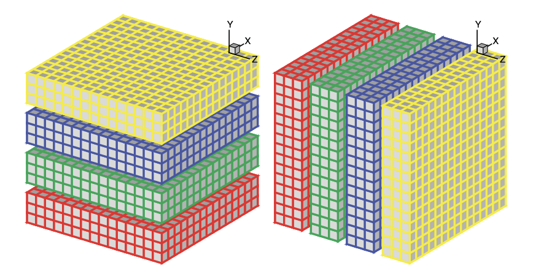
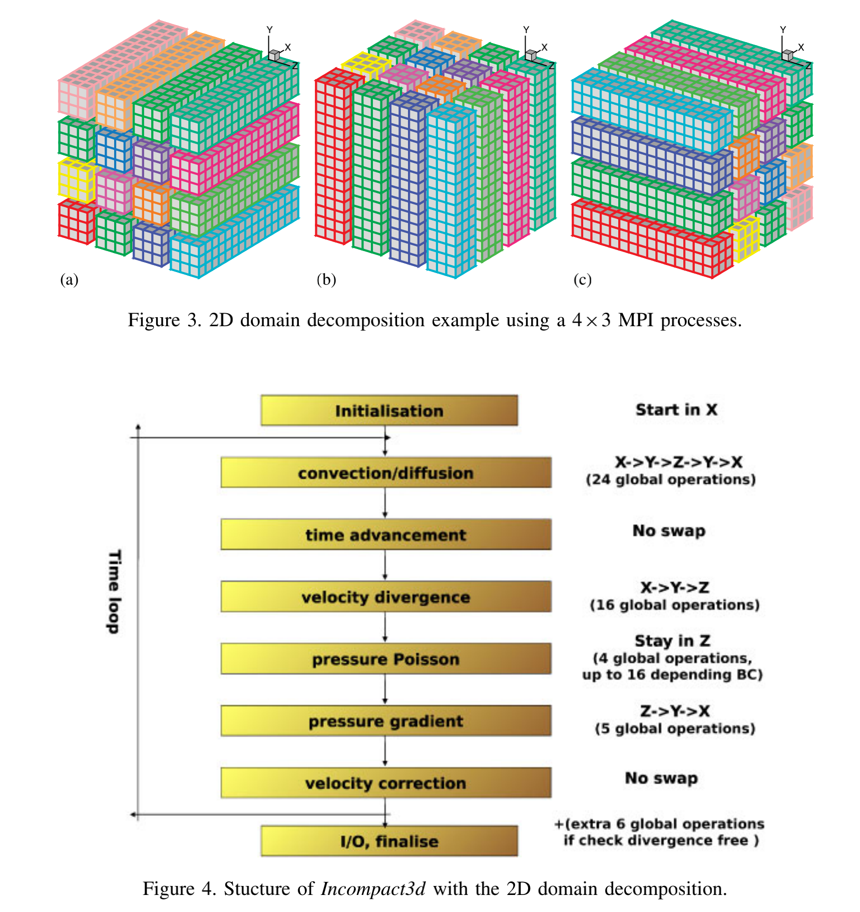

Incompact3D
It's the incompressible Navier–Stokes equations using sixth-order compact schemes for spatial discretization. It basically implement a ODE with numerical methods called Multistep Methods.
the Poisson equation is fully solved in spectral space using Fast Fourier Transform (FFT) routines

Intro to the algorithm and implementation


Test Case Taylor
Build for MKL/FFTW3
Reminder:
- Enable MKL speedup on AMD Platform
int mkl_serv_intel_cpu_true() {
return 1;
}
- FFTW3 migrate to CuFFT.
Build libnpc with spack
I don't know why...it fails to build when MPICXX is set...
Here is a quick hack
class Libnbc(AutotoolsPackage):
"""LibNBC is a prototypic implementation of a nonblocking
interface for MPI collective operations. Based on ANSI C and
MPI-1, it supports all MPI-1 collective operations in a
nonblocking manner. LibNBC is distributed under the BSD license.
"""
homepage = "http://unixer.de/research/nbcoll/libnbc/"
url = "http://unixer.de/research/nbcoll/libnbc/libNBC-1.1.1.tar.gz"
version('1.1.1', sha256='63aa5f75f84c191da0688cb551ebd0e9e46928edfba350b2a534eb0c704dd9c3')
depends_on("mpi")
+ def configure_args(self):
+ args = []
+ args.append("MPICXX=")
+ return args
Reference
- Incompact3d: A powerful tool to tackle turbulence problems with up to \(O\left(10^{5}\right)\) computational cores